Logische Schalter¶
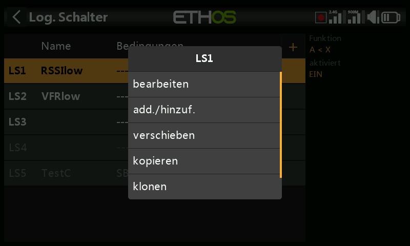
Logische Schalter sind vom Benutzer programmierte virtuelle Schalter — keine physischen Bedienelemente, die Sie umlegen können, aber sie können wie jeder physische Schalter als Programmauslöser verwendet werden. Jeder logische Schalter vergleicht die programmierte Bedingung mit seinen Eingängen (andere Schalter, Telemetriewerte, Mischwerte, Timerwerte, Kreisel- und Trainerkanäle und weitere) und wird dadurch WAHR oder FALSCH. Es werden bis zu 100 logische Schalter unterstützt; es gibt keine Standard-Logikschalter. Mit + fügen Sie einen hinzu; die Beschriftung eines definierten Schalters in der Menüüberschrift ist grün, wenn sein Zustand WAHR ist, und rot, wenn er FALSCH ist. Durch Antippen eines vorhandenen Schalters erscheint ein Popup-Menü mit bearbeiten/verschieben/kopieren-einfügen/klonen/löschen.
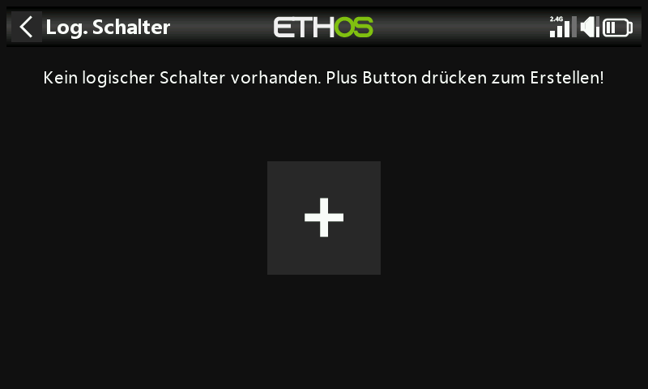
Funktion¶
Alle Funktionen können normale oder invertierte Ausgänge haben.
- A ~ X — WAHR, wenn der Wert der ausgewählten Quelle
Aungefähr gleich (innerhalb von etwa 10 %) mitX, einem benutzerdefinierten Wert, ist. In den meisten Fällen ist es besser, die Funktion „Ungefähr gleich“ zu verwenden als die Funktion „Genau gleich“ —
— denn bei A = X kann der tatsächliche Telemetriewert um einen Zielwert
von 8,4 V herum etwa von 8,5 V auf 8,35 V springen, so dass er nie genau
8,4 V erreicht, die Bedingung nie erfüllt ist und der logische Schalter
nie einschaltet.
- A = X — WAHR nur dann, wenn der Wert von A 'genau' gleich X ist.
- A > X / A < X — WAHR, wenn A größer bzw. kleiner ist als X.
- |A| > X / |A| < X — wie oben, jedoch wird der absolute Wert von
A verglichen (absolut bedeutet, dass nicht berücksichtigt wird, ob A
positiv oder negativ ist).
- Δ > X — WAHR, wenn die Änderung des Wertes (Delta) der Quelle A
innerhalb des Prüfintervalls mindestens X erreicht. Wird das
Prüfintervall auf --- gesetzt, so wird das Prüfintervall unendlich.
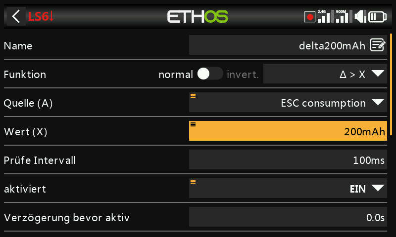
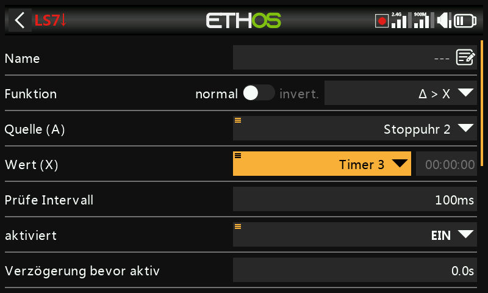
- |Δ| > X — wie oben, jedoch mit dem absoluten Wert der Änderung.
- Bereich — WAHR, wenn der Wert der Quelle
Ainnerhalb des angegebenen Bereichs liegt.
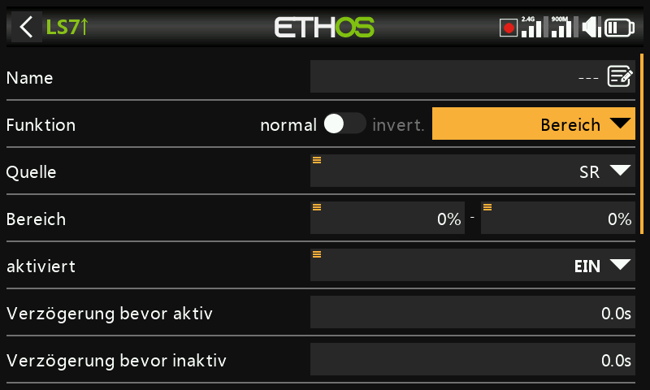
- UND — WAHR nur dann, wenn alle aufgeführten Quellen (Wert 1 … Wert(n)) WAHR sind.
- ODER — WAHR, wenn mindestens eine der aufgeführten Quellen WAHR ist.
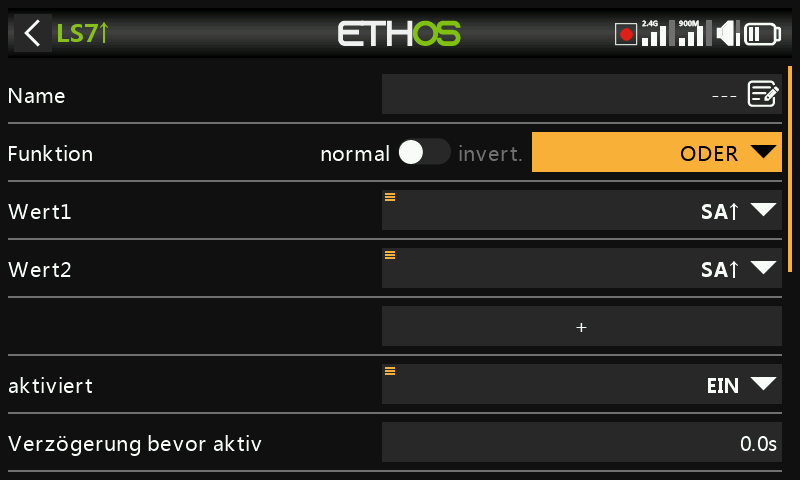
- XOR (Exklusiv-ODER) — WAHR, wenn nur eine der aufgeführten Quellen WAHR ist.
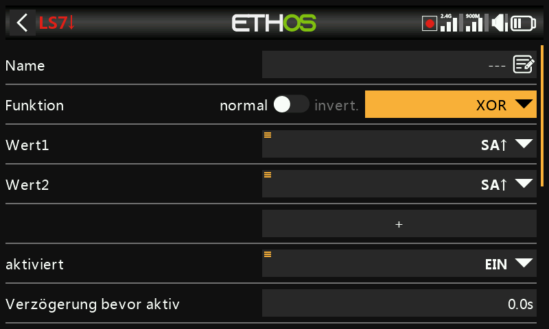
- Taktgenerator — schaltet kontinuierlich ein und aus: eingeschaltet für die Zeit Laufzeit aktiv, ausgeschaltet für die Zeit Laufzeit inaktiv.
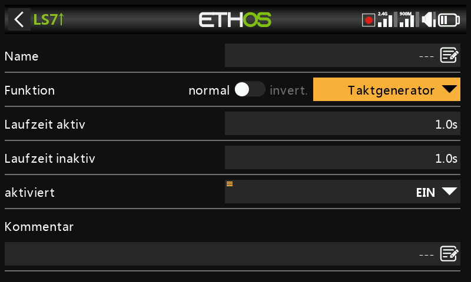
- SR FlipFlop — eine Verriegelung (SR-Flip-Flop); siehe unten.
- Impuls/Übergang — ein Momentanimpuls; siehe unten.
Sticky¶
Verriegelt auf WAHR, sobald die Trigger-EIN-Bedingung erfüllt ist, und hält seinen Wert, bis er durch die erfüllte Trigger-AUS-Bedingung auf FALSCH gezwungen wird — optional gesteuert durch den Parameter aktiviert (solange diese Bedingung FALSCH ist, wird der Logikschalterausgang ebenfalls auf FALSCH gehalten; die SR-FlipFlop-Funktion arbeitet dabei im Hintergrund weiter und die verriegelte Bedingung wird zum Ausgang durchgeschaltet, sobald die aktive Bedingung wieder WAHR wird — vorbehaltlich aller Verzögerungen).
Seit Ethos 1.6.2 akzeptieren beide Trigger-Eingänge zusätzlich die Option
Impuls/Übergang nach (Flanke) — dazu lange die ENT-Taste bei der
Trigger-Bedingung drücken und die Option auswählen, angezeigt mit
vorangestelltem † — was eine deutlich feinere Konfiguration ermöglicht:
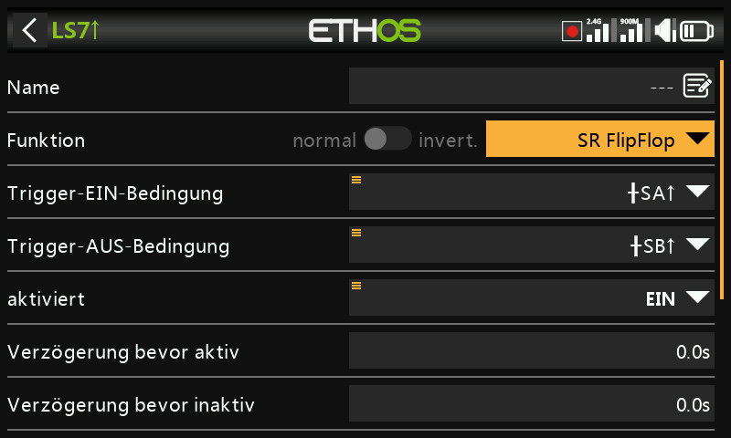
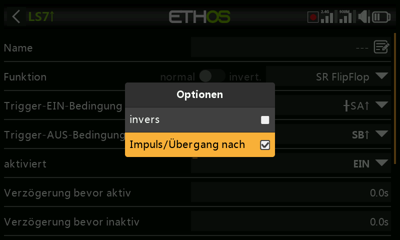
- Trigger EIN
SA(keine Verzögerung) — verriegelt in dem Moment auf WAHR, in dem SA auf EIN geht. - Trigger EIN
SA(Verzögerung = 1 s) — verriegelt 1 Sekunde, nachdem SA auf EIN gegangen ist, auf WAHR, sofern SA während dieser Verzögerung auf EIN bleibt. - Trigger EIN
†SA(Verzögerung = 1 s) — schaltet 1 Sekunde, nachdem SA auf EIN gegangen ist, von WAHR auf FALSCH um, auch wenn SA während dieser Verzögerung nicht auf EIN bleibt (die Flanke ist bereits aufgetreten; die Verzögerung bestimmt lediglich den zeitlichen Ablauf).
Die Trigger-AUS-Bedingung verhält sich in umgekehrter Richtung genauso. Die Verzögerungen wirken nach der aktiven Bedingung — eine Änderung der aktiven Bedingung startet die Verzögerungszeit also erneut, bevor der verriegelte Wert wieder den Ausgang erreicht. Wechseln beide Triggerbedingungseingänge gleichzeitig von FALSCH auf WAHR, so ändert der SR-FlipFlop-Ausgang einmal seinen Zustand. Bitte beachten Sie auch die Gemeinsamen Parameter weiter unten.
Edge¶
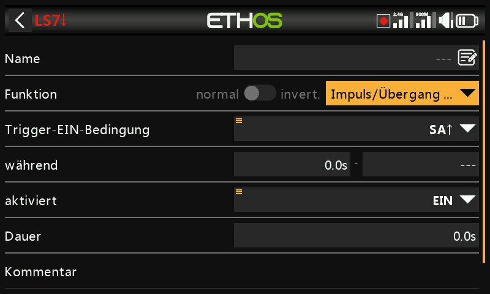
Ein Momentanschalter, der für die in Dauer angegebene Zeitspanne WAHR
wird, sobald seine Trigger-Bedingung erfüllt ist. während besteht aus
zwei Teilen [t1:t2] und legt genau fest, wann dies geschieht:
- Flanke steigend, während = 0,0 s — löst in dem Moment aus, in dem die Trigger-EIN-Bedingung von FALSCH auf WAHR übergeht.
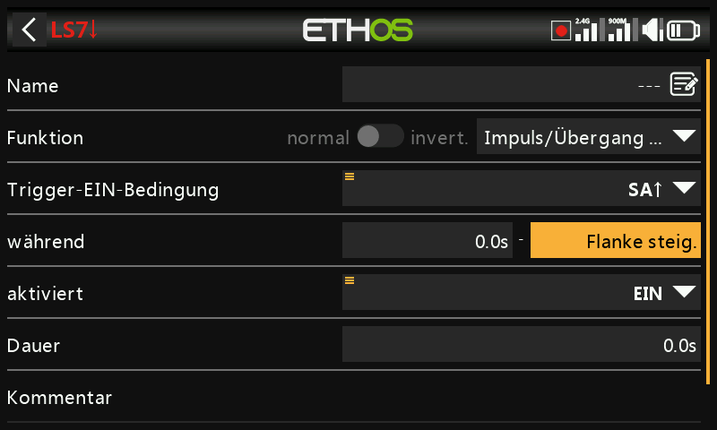
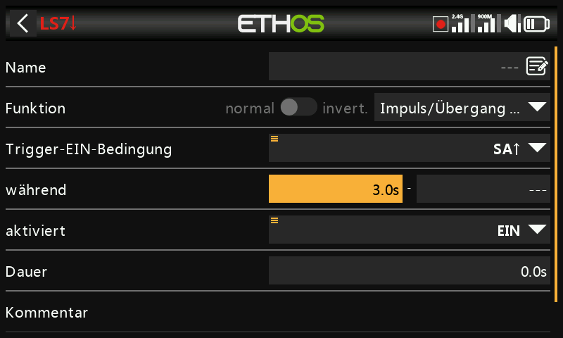
- Flanke steigend, während ≥ 0,0 s (z. B. 5,0 s) — löst 5 Sekunden nach dem Übergang der Trigger-EIN-Bedingung auf WAHR aus; alle weiteren 'Einschaltimpulse' während der Periode t1 werden ignoriert.
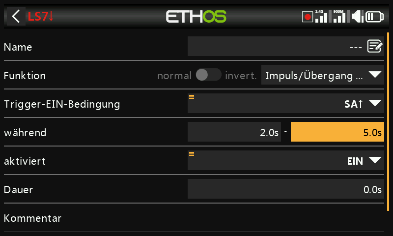
- Fallende Flanke, während = 0,0 s — löst in dem Moment aus, in dem die Trigger-EIN-Bedingung von WAHR auf FALSCH übergeht.
- Fallende Flanke, während ≥ 0,0 s (z. B. 3,0 s) — löst beim Übergang von WAHR auf FALSCH aus, jedoch nur, wenn die Bedingung zuvor mindestens 3 Sekunden lang WAHR war.
- Impuls (sowohl t1 als auch t2 gesetzt) — löst nur aus, wenn die Trigger-EIN-Bedingung innerhalb dieses Fensters von FALSCH auf WAHR und wieder auf FALSCH wechselt (z. B. nach mindestens 2, aber spätestens nach 5 Sekunden).
Gemeinsame Parameter¶
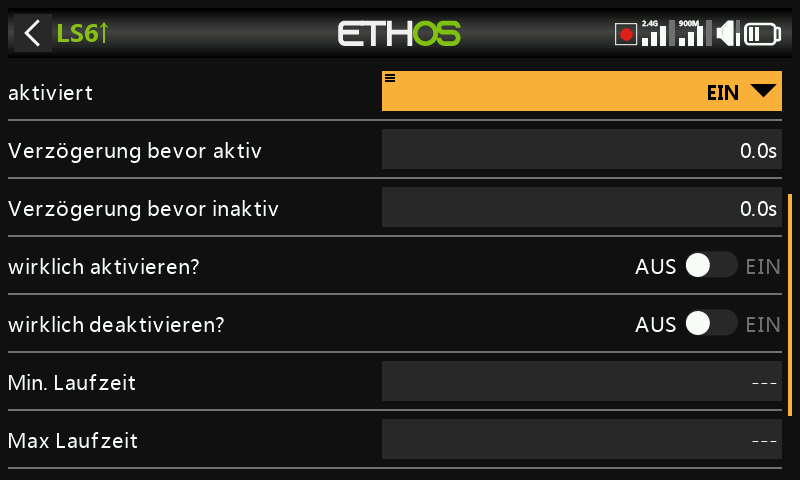
- Aktiviert durch — steuert den Ausgang des Logikschalters auf dieselbe Weise wie oben beim SR FlipFlop beschrieben. Auswählbar sind: EIN, Schalterstellungen, Funktionsschalter, Logik-Schalter, Trimm-Positionen, Telemetrie, Flugmodi oder ein System-Ereignis (Gasstellung halten, Motor aus, Gas aktiv, Telemetrie aktiv, RSSI niedrig, Trainer aktiv, Flug zurücksetzen).
- Verzögerung bevor aktiv / Verzögerung bevor inaktiv — bestimmt die Zeit, für die die Logikschalterbedingungen WAHR (bzw. FALSCH) sein müssen, bevor der Logikschalterausgang folgt; die Verzögerung kann bis zu 60,0 s betragen. Nicht relevant für Taktgenerator und Impuls/Übergang… (Siehe Anleitung: Warnung bei Akkukapazität für eine Verzögerung, mit der ein Spannungseinbruch entprellt wird.)
- Bestätigung vor Aktivierung / vor Inaktivität — fordert eine Bestätigung des Benutzers an, bevor der Zustand tatsächlich geändert wird (mit einer Option zum Abbrechen für Situationen, in denen der Bestätigungsdialog zu häufig angezeigt wird) — praktisch, bevor man etwas Gefährliches beginnt, z. B. zur Bestätigung, bevor ein Fahrzeug per Fernsteuerung ausgeschaltet wird.
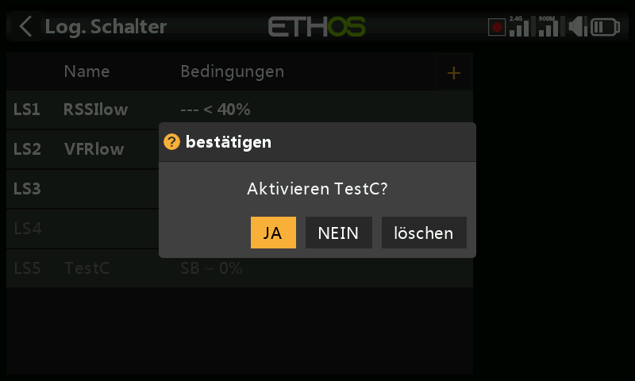
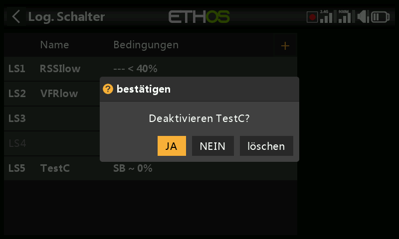
- Min. Laufzeit — sobald der Logikschalter WAHR wird, bleibt er
mindestens für diese Zeit WAHR. Beim Standardwert
---wird der Logikschalter unter Umständen nur für einen Verarbeitungszyklus des Mischers WAHR, was zu kurz ist, um gesehen zu werden — die Bezeichnung wird dann in der Statuszeile nicht fett. - Max. Laufzeit — ist eine maximale Dauer festgelegt, wechselt der Logikschalter nach dieser Zeit automatisch wieder auf FALSCH. Beide Zeiten können bis zu 60,0 s betragen.
- Kommentar — freier Text zur Erläuterung der Verwendung oder Funktion. Der Kommentar wird angezeigt, wenn ein Logikschalter zu einem Werte-Widget hinzugefügt wird.
Verwendung mit Telemetrie¶
Das System-Ereignis Telemetrie aktiv (oder ein Schalter, dessen Quelle ein Telemetriesensor ist und der nur aktiv ist, solange dieser Sensor Daten liefert) deckt Bedingungen der Art „wird derzeit Telemetrie empfangen“ ab.
Warning
Wenn ein Mischer über einen telemetriebasierten logischen
Schalter freigegeben wird, muss eine zweite Aktion mit demselben
Logikschalter invertiert hinzugefügt werden, um sicherzustellen,
dass der Mischer auch bei Ausfall der Telemetrie gültige Werte enthält —
denken Sie daran, dass bei einem inaktiven Mischer der Kanalausgang auf
Neutral = 0 % = 1500 µs steht bzw. auf Halbgas bei einem Gaskanal.
Alternativ können Sie eine Offset-Aktion verwenden, die bereits über
getrennte Werte für aktiv und inaktiv verfügt — z. B. deckt die Quelle
0 (der spezielle Wert) mit einem so eingestellten Offset, dass der
Mischer +100 % liefert, während LS3 aktiv ist, und −100 %, während er
inaktiv ist, beide Fälle in einer einzigen Aktion ab.
Vergleich von Quellen¶
Eine Quelle wird normalerweise mit einem festen Wert verglichen, es können aber auch zwei Quellen desselben Typs direkt miteinander verglichen werden — z. B. zwei Timer, zwei Spannungen oder zwei Drehzahlsensoren.
Trainer-Eingaben vom Slave ignorieren¶
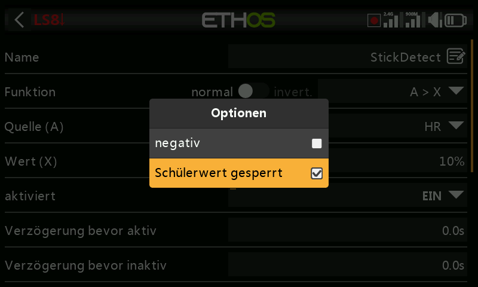
Die Optionen einer Quelle können Trainer-Eingaben von einem angeschlossenen Schüler-Sender (Slave) ausschließen — dies wird typischerweise bei einem logischen Schalter verwendet, der die Knüppelbewegung des Lehrers überwacht (z. B. um sofort eingreifen zu können, wenn etwas schiefgeht), ohne dass auch die Eingaben des Schülers ihn auslösen. Häufig wird dies mit einem Trainer-Schalter kombiniert, der die aktive Bedingung des Lehrers freigibt.